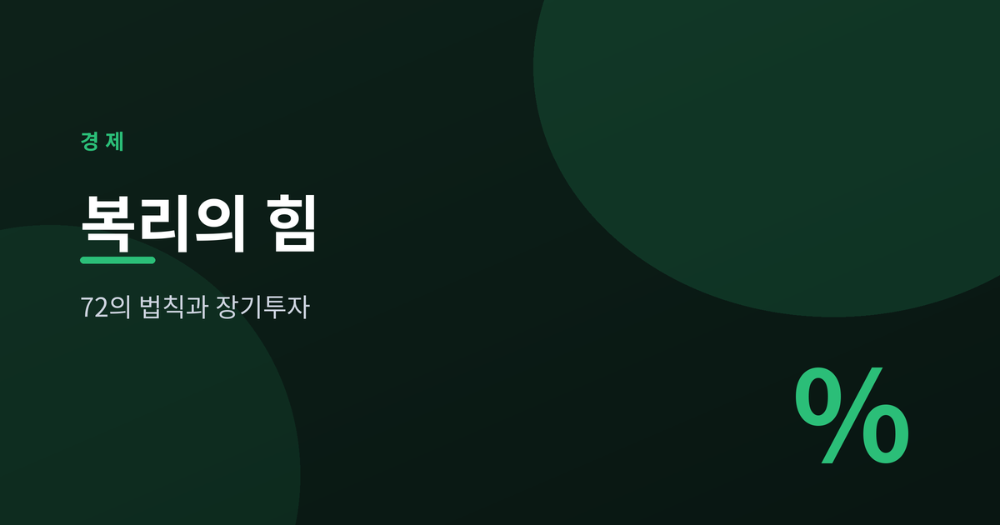
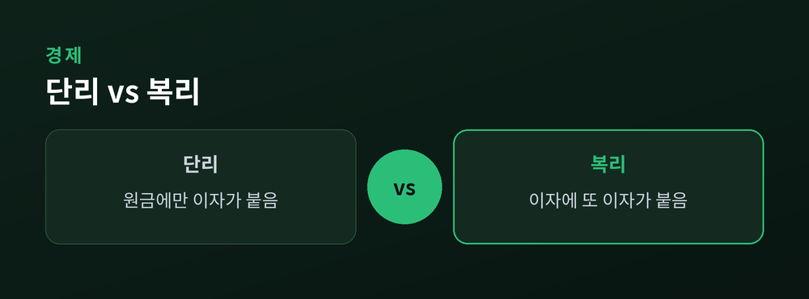
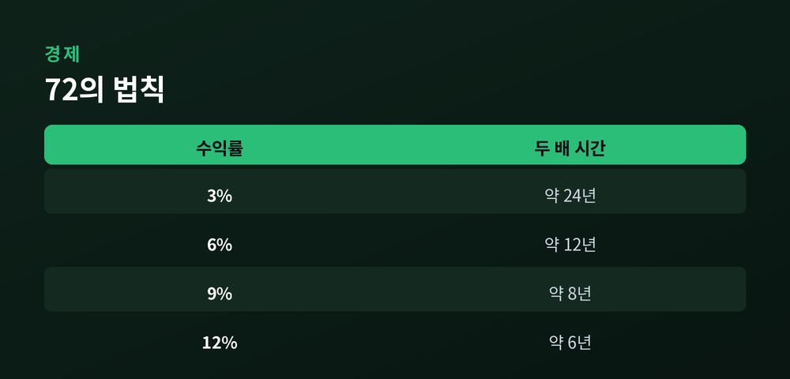
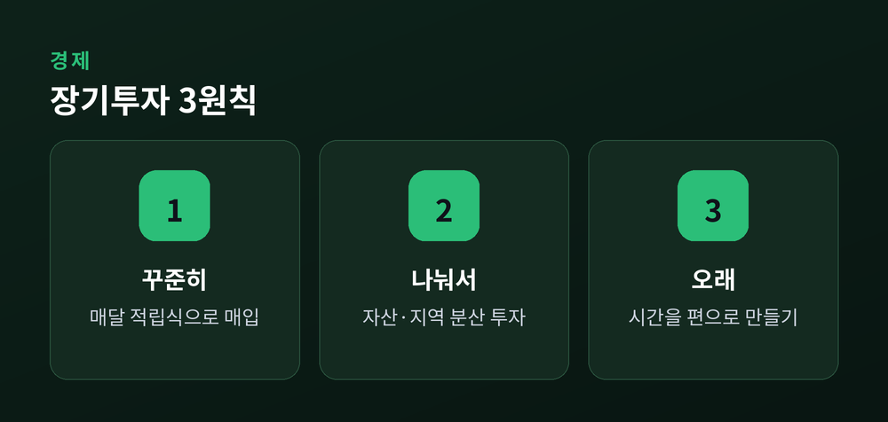

72의 법칙과 장기 분산투자의 기초

돈이 돈을 버는 구조를 우리는 복리라고 부릅니다. 말은 익숙하지만, 그 힘을 몸으로 느끼는 사람은 많지 않습니다. 이 글은 투자 권유가 아니라 개념 정리를 위한 것입니다. 숫자 몇 개로 복리의 원리를 차근히 풀어보겠습니다.
단리는 원금에만 이자가 붙습니다. 복리는 이자에 다시 이자가 붙습니다. 이 작은 차이가 시간이 길어질수록 벌어집니다.
예를 들어 연 7% 수익을 가정해 봅시다. 첫해에 붙은 이자는 다음 해 원금의 일부가 됩니다. 그 위에 또 이자가 쌓입니다. 처음 몇 년은 지루할 만큼 느립니다. 그러나 후반부로 갈수록 곡선이 가팔라집니다.
핵심은 곱하기가 반복된다는 점입니다. 더하기가 아니라 곱하기이기 때문에, 시간이 지날수록 증가폭 자체가 커집니다. 예전엔 이자를 '조금 더 받는 것' 정도로 여겼다면, 지금은 시간을 태워 원금을 배로 키우는 엔진으로 보는 편이 맞습니다.
다만 복리는 마법이 아닙니다. 충분한 시간과 꾸준함이 없으면 그 곡선의 가파른 구간에 도달하지 못합니다.

복리의 속도를 가늠하는 간단한 도구가 있습니다. 72의 법칙입니다.
방법은 단순합니다. 72를 연 수익률(%)로 나누면, 원금이 두 배가 되는 데 걸리는 대략의 연수가 나옵니다. 수익률 6%라면 72 ÷ 6 = 12년. 수익률 8%라면 72 ÷ 8 = 9년입니다.
72라는 숫자를 쓰는 이유는 2, 3, 4, 6, 8, 9로 잘 나뉘어 암산이 편하기 때문입니다. 정확한 값은 로그를 써야 나오지만, 연 4~12% 구간에서는 이 어림셈이 꽤 잘 맞습니다. 수익률이 너무 낮거나 높으면 오차가 커진다는 한계는 있습니다.
이 법칙의 진짜 쓸모는 시간 감각에 있습니다. 몇 퍼센트냐보다, 두 배까지 몇 년이냐를 그려보게 해 주기 때문입니다.

복리의 연료가 시간이라면, 개인이 통제할 수 있는 부분은 '얼마나 오래, 얼마나 꾸준히'입니다.
적립식 투자는 매달 일정액을 넣는 방식입니다. 쌀 때 더 많이, 비쌀 때 덜 사게 되어 매입 단가가 평균에 수렴하는 효과가 있습니다. 타이밍을 맞히려는 스트레스도 줄어듭니다.
분산투자는 달걀을 한 바구니에 담지 않는 원칙입니다. 여러 자산과 지역에 나눠 담으면, 하나가 흔들려도 전체 충격이 완화됩니다. 이 원리를 저렴하게 구현하는 대표 수단이 인덱스펀드와 ETF입니다. 시장 전체를 통째로 담아 개별 종목 리스크를 낮춥니다.
물론 분산이 손실을 없애 주지는 않습니다. 시장 전체가 내려가면 함께 내려갑니다. 변동성은 늘 존재하며, 단기적으로는 원금이 줄어드는 구간도 있습니다. 복리 곡선이 우상향하려면 그 출렁임을 견디는 긴 호흡이 필요합니다.

시간은 아무것도 하지 않아도 흐르지만, 복리는 시간을 태워야만 작동합니다. 오늘 심은 작은 씨앗이 곡선의 가파른 구간에 닿는 그날까지, 결국 필요한 건 조급함이 아니라 인내였는지도 모릅니다.